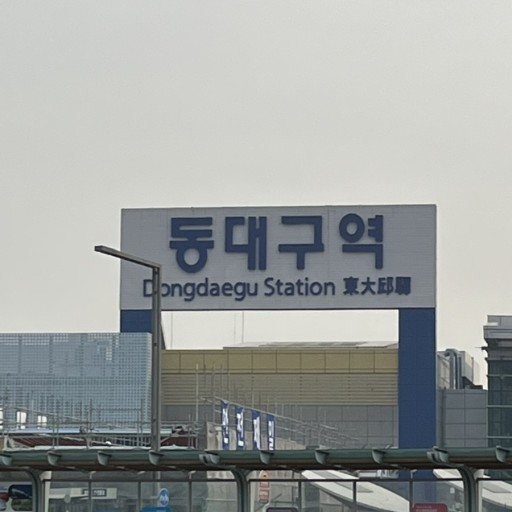
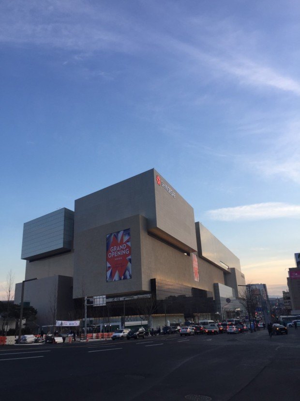

1. 버스역과 기차역, 대중교통이 공존
동대구역은 동대구역(기차), 복합환승센터(시외버스), 지하철역, 시내버스역이 모두 존재해서 이 곳을 기점으로 이동하기에 매우 편리한 구조이다
1. Bus/subway station + mass transportation
It is a very good place to move to another region of the area due to the fact that this station possesses all the transport options

2. 중구, 수성구와 가까운 거리
편리한 교통성과 함께 주요 관광명소가 밀집한 중구, 수성구와 지리적으로 가까운 동대구역의 위치는 매우 큰 장점이다
1. Bus/subway station + mass transportation
It is a very good place to move to another region of the area due to the fact that this station possesses all the transport options
3. 신세계백화점
동대구역에는 백화점이 연결되어 있어, 영화관, 식사, 플리마켓, 전시회등 여러가지 문화요소를 즐길 수 있는 역입니다
3. SSG department store
It is connected to the SSG department store where you can enjoy movie, dining, fleemarket, exhibition.
